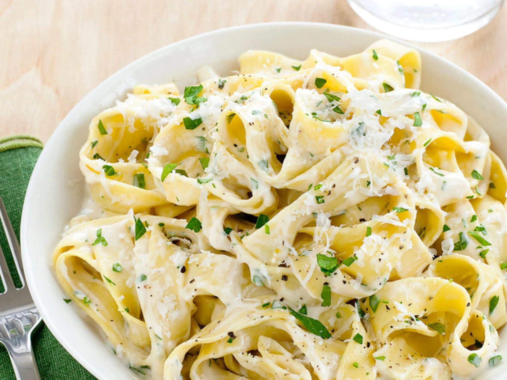

Fettucini Alfredo

A fast and easy to make, yet delicious, creamy, pasta dish.
Prepared in only 30 minutes, this dish makes for the perfect dinner for those without an aptitude for cooking, or those short on time.
Ingredients
- 24 ounches dry fettucini pasta
- 1 cup butter
- 3/4 pint heavy cream
- Salt and pepper to taste
- 1 dash garlic salt
- 3/4 cup grated Romano cheese
- 1/2 cup grated Parmesan cheese
Steps
- Bring a large pot of lightly salted water to a boil. Add fettuccine and cook for 8 to 10 minutes or until al dente; drain.
- Melt butter into cream in a large saucepan over low heat; add salt, pepper, and garlic salt. Increase the heat to medium; stir in grated Romano and Parmesan cheese until melted and sauce has thickened.
- Add cooked pasta to sauce and toss until thoroughly coated; serve immediately.